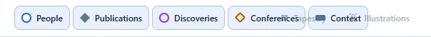

The toolbar overflows at tablet and small-laptop widths, and filter buttons cover Tapestry and Illustrations

- Problem
Between the 768px mobile breakpoint and roughly 1,100–1,200px, the secondary toolbar's contents are wider than the space left over.
.toolbar-secondaryhasmin-width: 0and its buttons usewhite-space: nowrap, so everything overlaps instead of wrapping. The 980px breakpoint only reduces padding. I confirmed this at 1024px and 844px; 1280px and above are fine.- Why it matters
- iPads, small laptops and split-screen browser windows all land in this range. Two controls become unreadable and partly unclickable.
- Recommendation
Pick one:
- Move the Options collapse breakpoint up to about 1180px, or use a container query on
.timeline-toolbarso it collapses based on the space it actually has. - Or split into two rows: layers on one row, display modes (Tapestry, Illustrations) on the other.
- Or make Tapestry and Illustrations icon-only below about 1280px, with the label in a tooltip.
Add a regression screenshot at 1024px to the verification checklist in
ui-refresh-plan.md.- Move the Options collapse breakpoint up to about 1180px, or use a container query on
- Code
style.css:266style.css:1505index.html:95–129